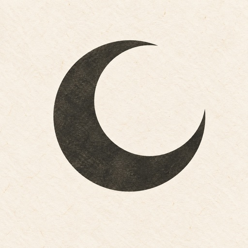

今日の月The moon tonight
月齢、照らされている割合、月の出・月の入り。今夜の月を身近に。Moon age, illumination, moonrise and moonset—your local view of tonight’s moon.

月あかり / Tsukiakari月の満ち欠けから、旧暦、二十四節気、夜空の惑星まで。日々の空を静かに楽しむための iPhone アプリです。From moon phases and the traditional lunar calendar to seasonal markers and visible planets—a quiet companion for the sky above you.
iPhone向け · 日本語・English · ダウンロード無料For iPhone · Japanese and English · Free to download
必要な情報はそのままに、毎日開きたくなる落ち着いた見やすさで。The details you need, arranged in a calm, readable space you’ll want to return to.
月齢、照らされている割合、月の出・月の入り。今夜の月を身近に。Moon age, illumination, moonrise and moonset—your local view of tonight’s moon.
月の満ち欠け、旧暦、二十四節気、七十二候をひとつの暦に。Moon phases, lunar dates, 24 solar terms and 72 micro-seasons in one calendar.
惑星の位置や見ごろ、星座、天体の接近を確認できます。Explore planetary positions and visibility, constellations and close approaches.
誕生日の月相を見つけて、同じ月に出会う楽しみを。Discover the moon phase on your birthday and find its next return.
毎日の月と季節を楽しむ機能は無料。より先まで調べたい方向けに、Proの追加機能をご用意しています。Everyday moon and calendar essentials are free. Pro adds tools for those who want to look further ahead.
月あかりの基本機能を無料でお使いいただけます。The essentials of Tsukiakari, free to use.
サブスクリプションではなく、一度の購入でPro機能を利用できます。Unlock Pro with a one-time purchase. No subscription.
価格は購入時にApp Storeで表示されます。購入の復元にも対応しています。Your localized price is shown in the App Store. Purchases can be restored.
月あかりと、空の小さな変化を。A little more wonder in the sky above.